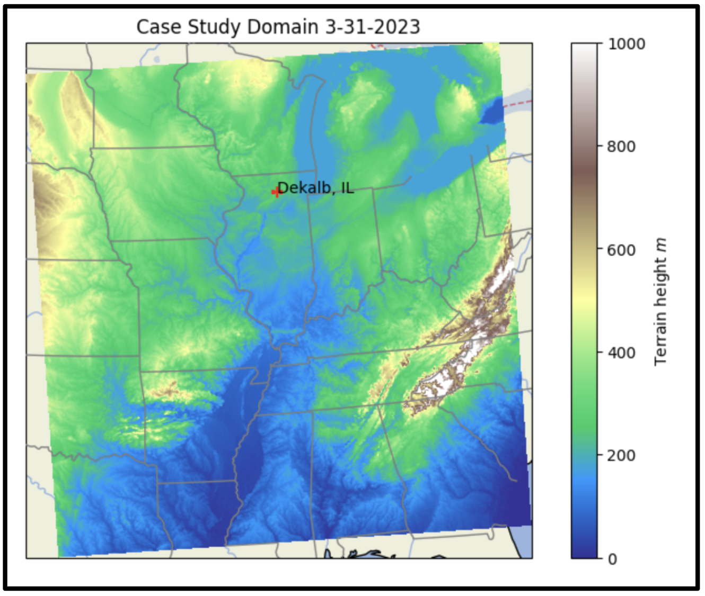
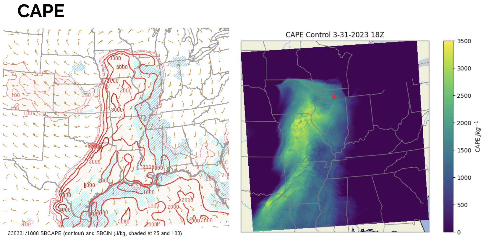
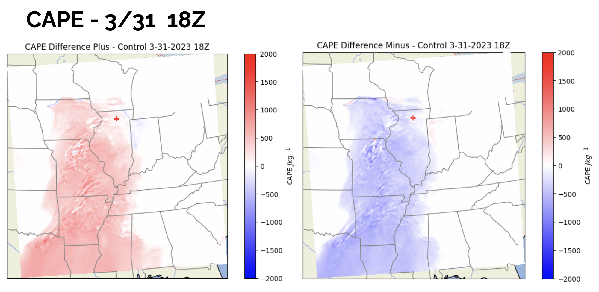
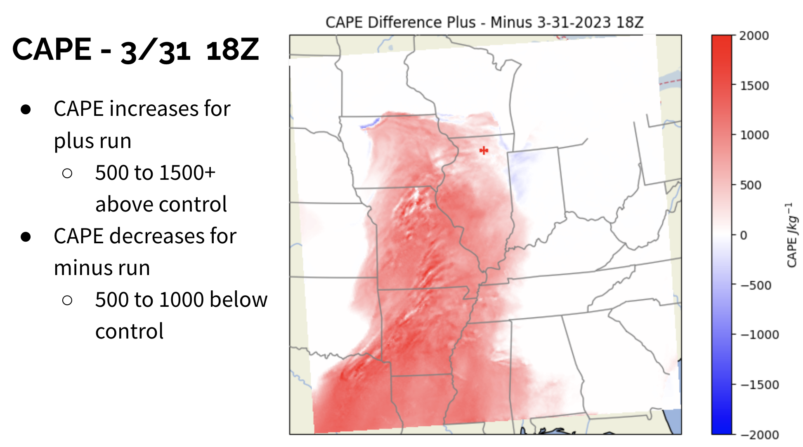
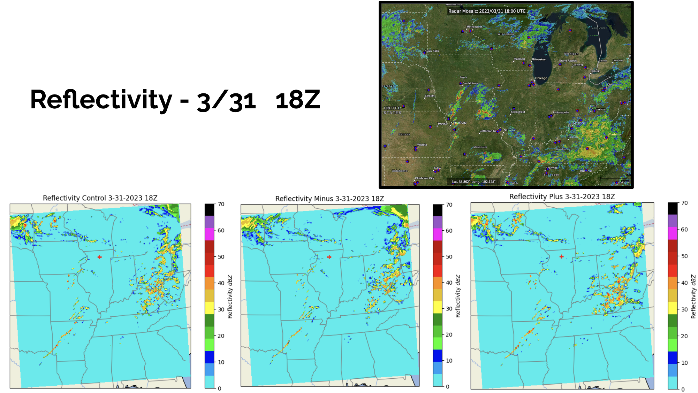
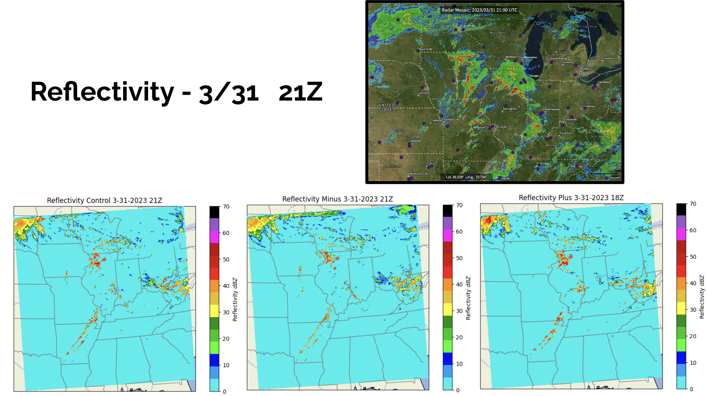
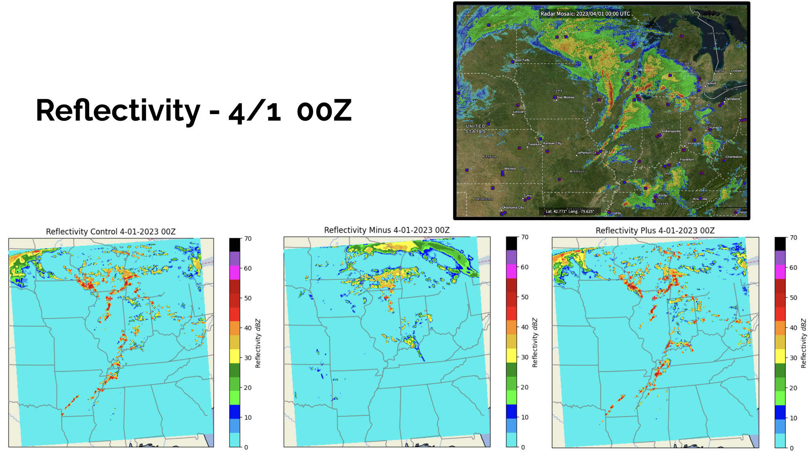

Numerical Weather Prediction Case Study
What if the March 31, 2023 tornado outbreak occurred in a warmer or cooler atmosphere?
Numerical Weather Prediction • Fall 2023
On March 31, 2023, a major tornado outbreak swept across the central and eastern United States. I wanted to explore how that storm environment might respond to a change in temperature. Would the storms behave differently if the atmosphere were a little warmer or cooler?
For this class case study, I used the Weather Research and Forecasting (WRF) model to simulate the outbreak environment with the original atmospheric conditions, then again with temperatures increased and decreased by 2°C. I compared the resulting instability and storm development among the three simulations.
The March 31, 2023 tornado outbreak
The March 31–April 1, 2023 outbreak was one of the largest tornado outbreaks on record in the United States. A total of 146 tornadoes were confirmed nationally, including 22 in the National Weather Service Chicago forecast area.
The outbreak included 11 EF3 tornadoes and one EF4 tornado, along with damaging straight-line winds reaching approximately 90 mph. The storms caused widespread damage and 27 fatalities.
The atmosphere was primed for severe storms. Strong vertical wind shear, around 60–70 knots through a deep layer of the atmosphere, was present along with mixed-layer convective available potential energy (CAPE) exceeding 1500 J/kg across parts of the region.

The NWS Chicago event summary includes storm reports, tornado tracks, radar imagery, photographs, and damage surveys.
Questions behind the experiment
- How might this outbreak environment have behaved in a cooler atmosphere, such as one with less anthropogenic warming?
- How might additional warming affect atmospheric instability and the development of severe storms during a similar event?
How I approached the problem
One way researchers investigate how weather events might change in a different climate is through Pseudo Global Warming (PGW) experiments. In a conventional PGW experiment, researchers modify the atmospheric conditions supplied to a regional weather model using climate model projections. These changes can include temperature, humidity, winds, pressure, and land surface conditions.
My project was a deliberately simplified version of this approach. I called it Pseudo Pseudo Global Warming (PPGW). Instead of modifying several atmospheric variables according to climate model projections, I adjusted the temperature field uniformly by 2°C and examined the response.
Model setup
- Atmospheric data: ERA5 reanalysis, using surface and pressure level fields at three-hour intervals from March 31, 2023 at 00 UTC through April 1 at 21 UTC.
- Weather model: WRF version 4.3.3, using the default physics configuration for this experiment.
- Model domain: Centered on Illinois and covering the outbreak region, with 548 × 563 grid points at 3 km spacing.
- Output: Hourly simulations of atmospheric conditions and storm development.
- Analysis: Comparison of simulated radar reflectivity, CAPE, and atmospheric stability diagnostics among the control, plus, and minus runs.

Why start with a simplified experiment?
This was an exploratory class project. A simple temperature perturbation allowed me to see which parts of the storm environment were especially sensitive to warming or cooling. The idea was to identify promising questions before attempting a more complete PGW experiment, which would require additional climate variables and considerably more analysis.
How did atmospheric instability change?
One of the first things I examined was convective available potential energy (CAPE). CAPE describes the energy available to an air parcel that rises freely through the atmosphere. It is an important ingredient for thunderstorm development, although high CAPE alone does not guarantee that severe storms or tornadoes will form.
In the warmer simulation, CAPE generally increased relative to the control, with differences of roughly 500 to more than 1500 J/kg in parts of the domain at 18 UTC. In the cooler simulation, CAPE generally decreased, with differences of approximately 500–1000 J/kg in some areas.
The important result was not simply that warming increased CAPE. The changes were spatially variable, and they influenced where and when the model developed convection.
Click any figure to view it at a larger size.



What happened to the simulated storms?
I also compared the simulated radar reflectivity fields to see how the precipitation structures and convective cells evolved through the event. The differences were visible even with this relatively simple temperature change.
- Cooler simulation: The minus run produced fewer and generally smaller convective cells than the control.
- Warmer simulation: The plus run developed larger convective cells earlier in the event.
- Later in the event: By around 00 UTC on April 1, the plus simulation became more similar to the control, suggesting that the timing of convective development was especially sensitive to the perturbation.
There were also differences in the location of convection. Activity in the southern part of the domain was reduced in the cooler run, while the warmer run showed enhanced activity farther north during portions of the simulation.
Reflectivity comparisons at three times during the outbreak.



What did I learn?
Even a relatively small temperature perturbation changed the simulated storm environment. The warmer atmosphere generally supported greater CAPE and earlier development of larger convective cells, while the cooler atmosphere supported less CAPE and fewer, smaller cells.
This was a useful first look at how sensitive a major severe storms environment can be to changes in temperature. It also gave me experience modifying model inputs, running WRF, troubleshooting the simulation workflow, and interpreting differences between experiments.
What this experiment does—and does not—tell us
These simulations do not tell us exactly how anthropogenic climate change affected the March 31, 2023 outbreak, nor do they predict how many tornadoes would occur in a future version of this event. I changed temperature without making the accompanying changes in humidity, winds, pressure, and other conditions that would occur in a physically consistent climate perturbation.
The experiment is best understood as a temperature sensitivity test. A more complete analysis would compare these results with conventional PGW simulations, investigate additional environmental variables such as convective inhibition, vertical wind shear, updraft strength, and helicity, and repeat the experiment across multiple events.
That broader approach is especially interesting because severe storms depend on several interacting ingredients. A warmer atmosphere may provide more instability, but changes in the winds, moisture, or mechanisms that initiate convection can alter the overall response.
Related research and resources
These resources provide more background on the March 31 outbreak, PGW experiments, and how researchers investigate severe storms in a changing climate.
NWS Chicago: March 31, 2023 outbreak
Official event summary with radar imagery, storm reports, damage surveys, and tornado track information.
Brogli et al. (2023)
A detailed explanation of the Pseudo Global Warming approach, including methodology and tools for ERA5-driven experiments.
Trapp & Hoogewind (2016)
An investigation of how extreme tornadic storm environments and events might be realized under future anthropogenic climate change.
Lasher-Trapp et al. (2023)
A case study examining the possible behavior of a derecho in a future warmer climate.